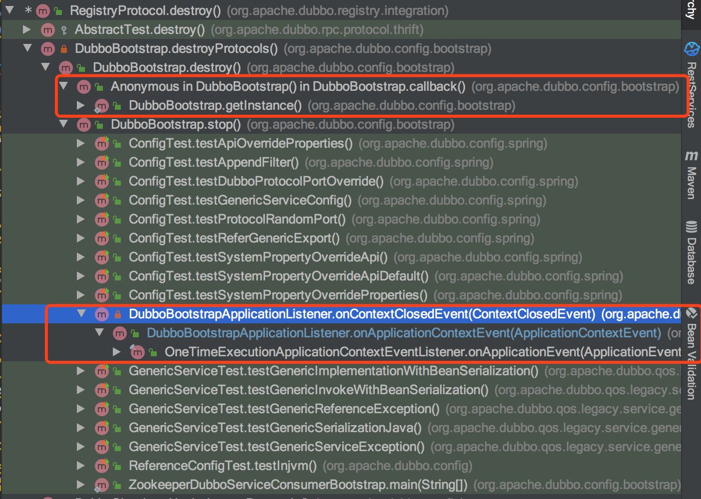
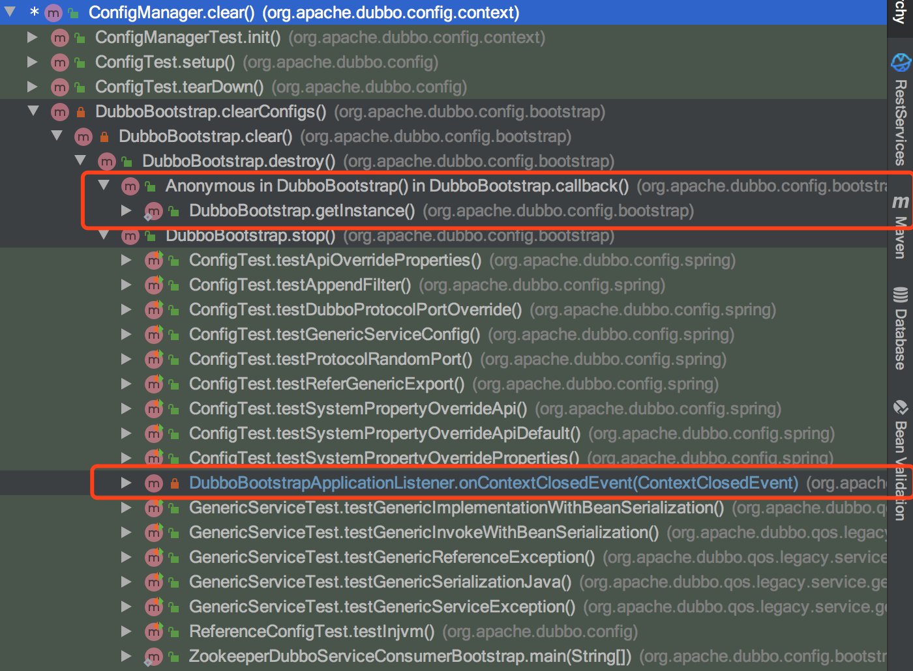

环境
os: MacBook Pro
dubbo: 2.7.5
java: 1.8
问题
运行dubbo-demo-xml-consumer项目，控制台报以下错误:
java.lang.IllegalStateException: There's no ApplicationConfig specified.
at org.apache.dubbo.config.context.ConfigManager.lambda$getApplicationOrElseThrow$0(ConfigManager.java:88)
at java.util.Optional.orElseThrow(Optional.java:290)
at org.apache.dubbo.config.context.ConfigManager.getApplicationOrElseThrow(ConfigManager.java:88)
at org.apache.dubbo.rpc.model.ApplicationModel.getApplicationConfig(ApplicationModel.java:100)
at org.apache.dubbo.registry.integration.RegistryProtocol.destroy(RegistryProtocol.java:500)
at org.apache.dubbo.rpc.protocol.ProtocolFilterWrapper.destroy(ProtocolFilterWrapper.java:166)
at org.apache.dubbo.rpc.protocol.ProtocolListenerWrapper.destroy(ProtocolListenerWrapper.java:80)
at org.apache.dubbo.config.DubboShutdownHook.destroyProtocols(DubboShutdownHook.java:140)
at org.apache.dubbo.config.DubboShutdownHook.destroyAll(DubboShutdownHook.java:124)
at org.apache.dubbo.config.bootstrap.DubboBootstrap.destroy(DubboBootstrap.java:1037)
at org.apache.dubbo.config.bootstrap.DubboBootstrap.stop(DubboBootstrap.java:817)
at org.apache.dubbo.config.spring.context.DubboBootstrapApplicationListener.onContextClosedEvent(DubboBootstrapApplicationListener.java:65)
at org.apache.dubbo.config.spring.context.DubboBootstrapApplicationListener.onApplicationContextEvent(DubboBootstrapApplicationListener.java:55)
at org.apache.dubbo.config.spring.context.OneTimeExecutionApplicationContextEventListener.onApplicationEvent(OneTimeExecutionApplicationContextEventListener.java:40)
at org.springframework.context.event.SimpleApplicationEventMulticaster.doInvokeListener(SimpleApplicationEventMulticaster.java:172)
at org.springframework.context.event.SimpleApplicationEventMulticaster.invokeListener(SimpleApplicationEventMulticaster.java:165)
at org.springframework.context.event.SimpleApplicationEventMulticaster.multicastEvent(SimpleApplicationEventMulticaster.java:139)
at org.springframework.context.support.AbstractApplicationContext.publishEvent(AbstractApplicationContext.java:393)
at org.springframework.context.support.AbstractApplicationContext.publishEvent(AbstractApplicationContext.java:347)
at org.springframework.context.support.AbstractApplicationContext.doClose(AbstractApplicationContext.java:991)
at org.springframework.context.support.AbstractApplicationContext$2.run(AbstractApplicationContext.java:929)
根据打印出来的日志，方法调用栈为

通过图可知org.apache.dubbo.registry.integration.RegistryProtocol#destroy该方法都会在org.apache.dubbo.config.bootstrap.DubboBootstrap#destroy中被调用，而且是通过Spring ContextClosedEvent事件(容器关闭时)、JVM钩子函数(JVM退出)触发。
报错的具体位置，在方法org.apache.dubbo.config.context.ConfigManager#getApplicationOrElseThrow中，通过断点分析org.apache.dubbo.config.context.ConfigManager#getConfig(java.lang.String)中获取配置信息时，configsCache为空，所以该方法的返回值为null，上层方法就报错了。
protected <C extends AbstractConfig> C getConfig(String configType) throws IllegalStateException {
return read(() -> {
Map<String, C> configsMap = (Map) configsCache.getOrDefault(configType, emptyMap());
int size = configsMap.size();
if (size < 1) {
// throw new IllegalStateException("No such " + configType.getName() + " is found");
return null;
} else if (size > 1) {
logger.warn("Expected single matching of " + configType + ", but found " + size + " instances, will randomly pick the first one.");
}
return configsMap.values().iterator().next();
});
}
已经定位到报错的位置，奇怪的时，运行dubbo-demo-api-consumer项目时，却不报错，那具体原因是什么呢？
分析
configsCache什么时候会被删除呢，通过代码可发现，在org.apache.dubbo.config.context.ConfigManager#clear方法中会删除：
public void clear() {
write(() -> {
this.configsCache.clear();
});
}
而该方法只会在org.apache.dubbo.config.bootstrap.DubboBootstrap#clearConfigs中被调用(除单元测试外)，该方法的调用栈:

通过调用栈发现org.apache.dubbo.config.context.ConfigManager#clear也会在org.apache.dubbo.config.bootstrap.DubboBootstrap#destroy被调用，而destroy同样会被Spring ContextClosedEvent事件(容器关闭时)、JVM钩子函数(JVM退出)触发。到这里，猜想:
在dubbo-demo-xml-consumer中运行程序结束后，Spring容器关闭时，会触发ContextClosedEvent事件[A]，而JVM退出时也会触发钩子函数[B]，两个都会去销毁缓存的配置信息等，存在[A]销毁了配置信息，即上文中configsCache，而[B]此时从缓存中没有获取到配置就会报错，实际通过断点调试确实如此。
总结
虽然这个错误不会导致程序的结果，但是报错的确让人很疑惑，如果不深入分析很难找到问题所在。
该问题已被解决，issues:https://github.com/apache/dubbo/issues/5813